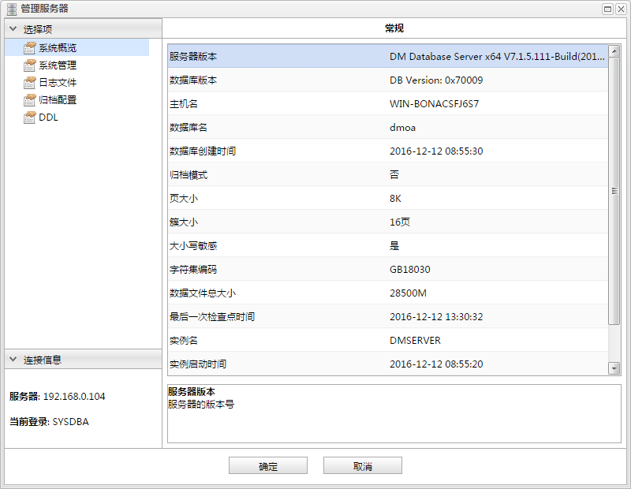
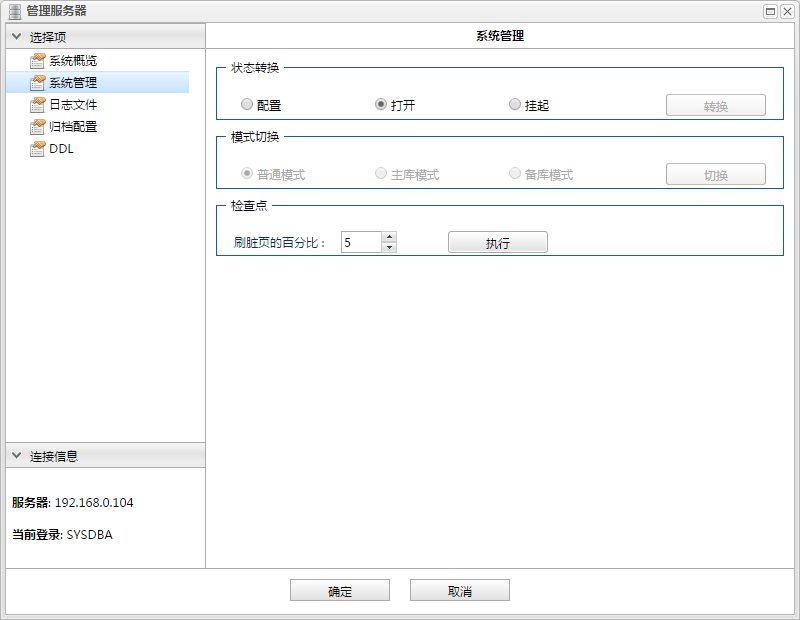
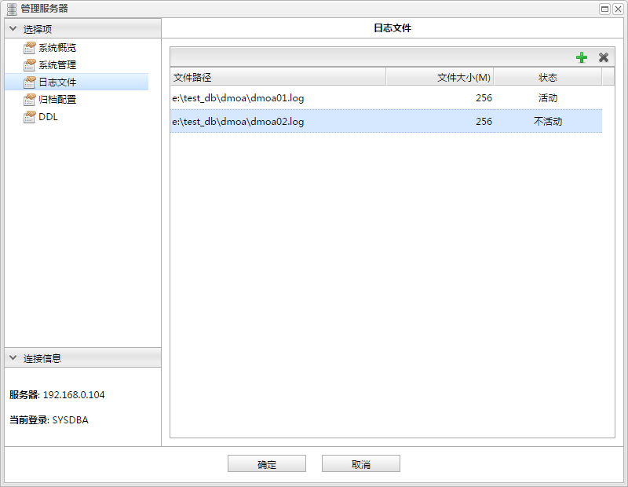
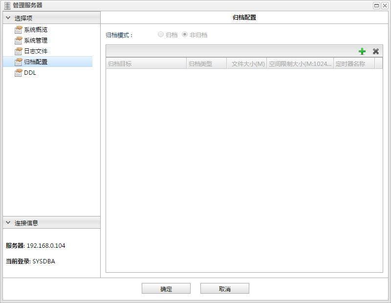
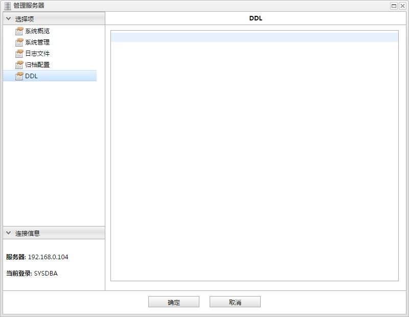

添加
添加 删除
删除通过管理服务器对话框，可以实现对当前连接数据库的系统管理包括状态、日志和归档等。

管理服务器对话框主要包括以下几部分:
当前连接数据库的基本信息，如下图所示:
系统管理包括状态转换、模式切换和检查点，如下图所示:

状态转换
转换数据库状态，包括：配置、打开和挂起。
模式切换
切换数据库模式，包括：普通模式、主库模式和备库模式。
检查点
设置刷脏页的比例，并执行。
查看和设置数据库的日志文件信息，如下图所示:

功能按钮列表| 按钮 | 说明 |
|---|---|
| 添加 |
添加新的日志文件 |
| 删除 |
删除选中日志文件 |
| 列名 | 说明 |
|---|---|
| 文件路径 | 日志文件的路径，双击可进行修改。 |
| 文件大小(M) | 日志文件大小，双击可进行修改。 |
| 状态 | 日志文件的状态。 |
编辑器(查询分析器)的首选项，如下图所示:

归档模式
包括归档和非归档。
| 列名 | 说明 |
|---|---|
| 归档目标 | 归档文件生成目录的路径，双击可进行修改。 |
| 归档类型 | 归档类型，包括:LOCAL、ASYNC、SYNC、REALTIME、MARCH、TIMELY。 |
| 文件大小(M) | 归档文件的大小，双击可进行修改。 |
| 空间限制大小(M:1024~4294967294) | 归档文件大小的限制，双击可进行修改。 |
| 定时器 | 归档的定时器，只在ASYNC归档可用。 |
显示修改相关系统设置生成的DDL语句，如下图所示:
